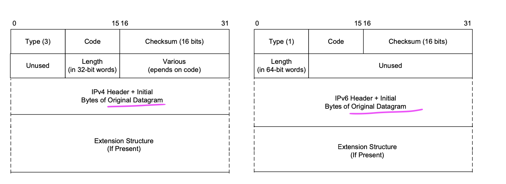
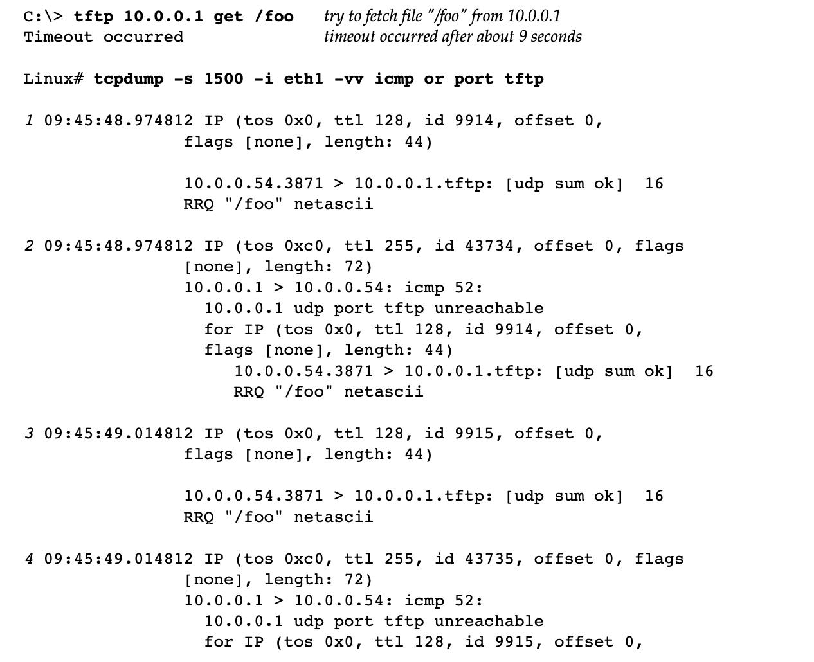
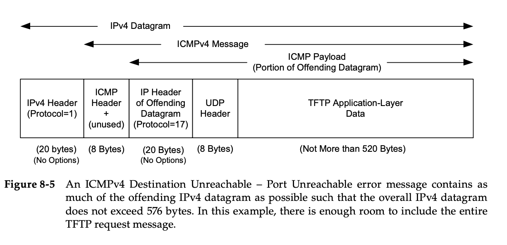
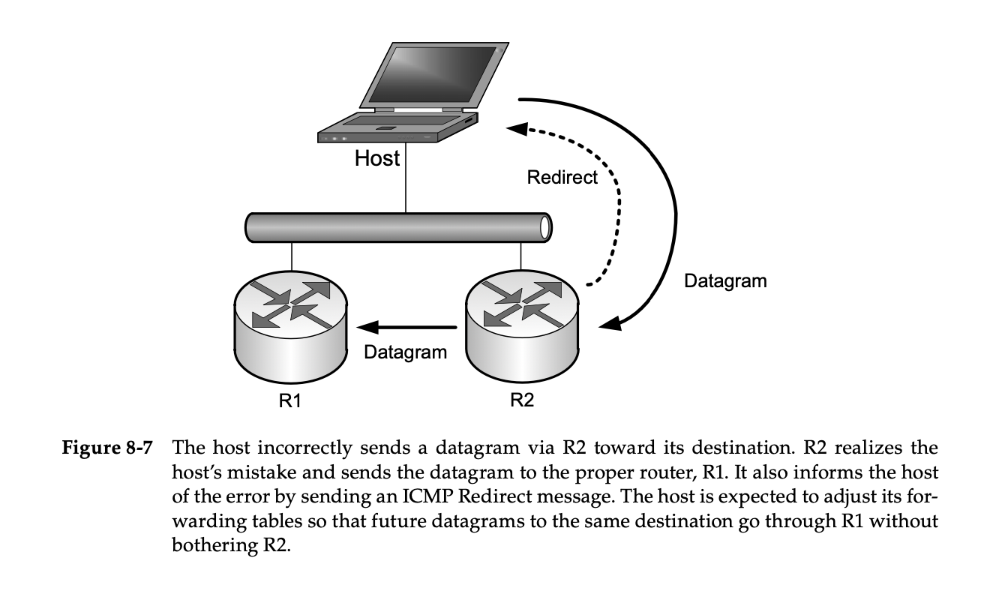

Ping & ICMP Message - 课堂笔记
Contents
ping command
ping is used to test the reachability of a host on an Internet Protocol (IP) network. Ping uses the Internet Control Message Protocol (ICMP) packets for its operation. Pinging involves sending an ICMP echo request to the target host and waiting for an ICMP echo reply.
ICMP Message Format
上面说的 ICMP echo request, ICMP echo reply 是 ICMP Message 的不同类型, 不同类型的 ICMP Message 可以通过 ICMP header 里的 type 和 code field 来判断,
首先整个协议栈 application 下的协议层的 package 结构都可以认为是 header + payload, 即整个协议栈也就是从上到下一直加不同的header, 比如应用层的数据到了加上运输层加上 TCP header 就成了 TCP segment, TCP segment 的结构即 tcp header + payload, payload 就是运输层的数据, 同理该 TCP segment 到了 IP 层加上 IP header 就成了 IP package, IP package = IP header + payload, 这里的 payload 就是上面的 TCP segment, 这一封装过程也叫 encapsulation,
其次要知道 ICMP 是工作在 IP层的, 然后它的相关数据是在 IP datagram 里的, 可以理解为 ICMP 在 IP 层之上, TCP 之下, 具体格式如下:

可以看到 ICMP Message 的前两字节是 type, code field, 这两个区域就是判断 ICMP Message 类型的, 具体规则如下:

可以看到若一个 ICMP Message 的 type 和 code field 都为 0 的时候, 该 ICMP Message 的类型就是上面我们说的 ICMP echo reply,
然后再看一下维基百科 ICMP Packet 的结构描述:
The ICMP packet is encapsulated in an IPv4 packet. The packet consists of header and data sections. 即与上面我们说的其他层数据结构一样,
ICMP Message = header + payload,
The ICMP header starts after the IPv4 header and is identified by IP protocol number. All ICMP packets have an 8-byte header and variable-sized data section. The first 4 bytes of the header have fixed format, while the last 4 bytes depend on the type/code of that ICMP packet. Internet Control Message Protocol
Results of Ping Command
|
|
可以看到有 3 次回应,
想用 tcpdump 监控一下 ping 数据包, 看看实际发送收到的什么, 然后就查了一下 ping 的端口号, 就像 ftp, http 应用层协议一般都有自己的默认端口, ping 也是工作在应用层的, 但是, 它没有端口号, 因为 ping 用的是 IP 层的 ICMP 协议, 而端口号和IP地址是属于 TCP层的, 这是在说 ping 不使用在传输层的 UDP 或 TCP, 直接跳过,
不仅会想, 应用层的每个应用接收信息都是监控的某个端口, 如一个应用推特只用监控手机上的某个特定端口所有的数据便可以收到信息, 但若 ping 没有端口号, 它是怎么知道来的数据包是属于它的呢?
专业的话讲就是 有多个进程使用TCP, 那么当TCP接收到数据时, 根据端口号知道数据是属于哪个进程的, 但若有多个进程都使用ICMP, 然后 ICMP 又不使用端口号, 那么当ICMP接收到数据时, 怎么知道该数据是属于哪个进程的呢？下面这个图很好(来源):

看到一个人的回答:
- 对于 ICMP 套接字，ICMP id 就是进程号。
- 对于 raw 套接字，程序自己记住 id。比如 Linux 的 ping 命令就会判断收到的 ICMP 包是不是对应自己发出的。
这个回答的意思就是说, 虽然 ping 没有端口号, 但是操作系统协议栈过滤了 ICMP Packets之后, ping 可以通过 ICMP Packet 的 id来判断是不是属于该进程, 我们用 tcpdump 监控一下, 看看发生了什么,
首先监控所有关于 icmp 的数据包,
|
|
然后 ping -c2 google.ca,
之后 tcpdump 输出如下:
|
|
可以看到有4个 icmp 数据包, 因为前面我们发送了两次 ping request, 然后得到了两次 echo reply, 所以是 4 个 ICMP 数据包, 很好理解, 然后前两个的 seq number 是0, 就是为了标注 icmp_seq 0的request对应的reply是 icmp_seq 0, 大概这个意思, 后两个是 1, 同理,
然后你看 id 一直都是 55385 没有变, 看来和上面那个回答一样, 就是用 id来标注某个 ICMP Message 属于那个进程的, 这样就不用端口号了, 至于ICMP echo reply, ICMP echo request, 你现在肯定知道是什么了,
再看一下详细的报告,
|
|
这里有两个 id, 第一个 id 是 65113, 一直是不变的这个应该是分辨进程的那个, 但是括号里面的那个 id 是什么? 然后这些 id, ttl, 是存储在哪层数据包的header呢?
看下 Claude-instant 的回答,
The id information in the round brackets (id 65113) is the ICMP identifier, which is used to identify this specific ICMP echo request/reply session. This ID is chosen by the system generating the ICMP echo request (in this case 192.168.2.15) and sent in each echo request. The responding system (142.250.80.35) then includes the same ID in the echo reply so the requestor knows which request it corresponds to.
The id information outside the round brackets (id 56957) is the IP identifier, which is used to reassemble fragmented IP packets. This is a separate identifier used at the IP layer, not specific to ICMP.
So in summary:
- (id 65113) - ICMP identifier, used to identify this specific ICMP echo session
- id 56957 - IP identifier, used for IP packet reassembly
These identifiers are stored and sent in the packet headers:
- The ICMP identifier is stored in the ICMP header
- The IP identifier is stored in the IP header
The information in the round brackets includes just the relevant ICMP fields:
- id - ICMP identifier
- seq - ICMP sequence number
- length - ICMP payload length
然后关于 ping 不需要端口号就能正确获取 ICMP Message 的原因, 具体点的解释我也没查到, 只有上面那个简单的回答, 不过经过分析我们也知道了就是通过 ICMP id 来判断的, 看看 AI 咋说的,
- Who generates the ICMP echo reply packet?
The operating system of the target system will generate the ICMP echo reply packet, not a separate ping program. Most operating systems have built-in functionality to handle and respond to ICMP echo requests.
- How does ping receive ICMP messages?
ICMP messages, including echo requests and replies, are received directly by the networking stack of the operating system. The ping program then uses APIs provided by the operating system to “listen” for incoming ICMP echo replies and correlate them to the requests it sent.
So in more detail:
-
Ping sends an echo request packet using the operating system’s ICMP APIs.
-
That echo request packet is routed to the destination IP address using the IP protocol number of 1.
-
The destination operating system receives the packet on its network interface. Its networking stack filters ICMP packets and recognizes the echo request.
-
The operating system then generates an echo reply packet in response, again using its built-in ICMP functionality.
-
The echo reply packet is routed back to the ping program’s system, again using the IP protocol 1.
-
The ping program, running as a userspace application, is using the operating system’s ICMP APIs. When an echo reply is received by the operating system, it notifies the ping program via those APIs.
-
The ping program then correlates the received echo reply packet to the original echo request it sent based on the sequence number, and knows a response was received.
总结一下, Ping 利用 ICMP, 看一下当信息类型为 ICMP echo reply 或 echo request 时, ICMP 的格式, 可以看到此时 type 为 0 或 8:

ICMP
ICMP 的类别
ICMP消息大体有两类：双向消息和单向消息。
双向消息，如常用的ping消息，用来测试网络的可达性。发起方是源设备，应答方是终端设备或者数据传输路径中的节点路由器。
单向消息一般为告警报错消息（type 3)，或Redirect消息（ type 5)，由于单向的消息是通知源主机出错。发起方都是数据包经过节点路由器。
ICMP 报文大致可分为两类：差错报文、查询报文。差错报文是单向的，查询报文是双向的。
ICMP 差错报文
—-ICMP 回送消息：用于进行通信的主机或路由之间，判断发送数据包是否成功到达对端的消息。可以向对端主机发送回送请求消息，也可以接收对端主机回来的回送应答消息。
—-ICMP 地址掩码消息：主要用于主机或路由想要了解子网掩码的情况。可以向那些主机或路由器发送 ICMP 地址掩码请求消息，然后通过接收 ICMP 地址掩码应答消息获取子网掩码信息。
—-ICMP 时间戳消息：可以向那些主机或路由器发送 ICMP 时间戳请求消息，然后通过接收 ICMP 时间戳应答消息获取时间信息。
这个讲的很好: wireshark分析icmp协议常见范例 - 知乎
ICMP协议及应用实例（ping，traceroute） - 掘金
ICMP
ICMP messages are grouped into two major categories: those messages relating to problems with delivering IP datagrams (called error messages), and those related to information gathering and configuration (called query or informational messages).
1. Processing of ICMP Messages
In ICMP, the processing of incoming messages varies from system to system. Generally speaking, the incoming informational requests are handled automatically by the operating system, and the error messages are delivered to user processes or to a transport protocol such as TCP [RFC5461]. The processes may choose to act on them or ignore them. Exceptions to this general rule include the Redirect message and the Destination Unreachable—Fragmentation Required messages. The former results in an automatic update to the host’s routing table, whereas the latter is used in the path MTU discovery (PMTUD) mechanism, which is generally implemented by the transport-layer protocols such as TCP
2. ICMP Error Messages
The distinction between the error and informational (query) classes of ICMP messages mentioned in the previous section is important because certain restrictions are placed on the generation of ICMPv4 error messages by [RFC1812] and on the generation of ICMPv6 error messages by [RFC4443] that do not apply to queries.
When an ICMP error message is sent, it contains a copy of the full IP header from the “offending” or “original” datagram (i.e., the IP header of the datagram that caused the error to be generated, including any IP options), plus any other data from the original datagram’s IP payload area such that the generated IP/ ICMP datagram’s size does not exceed a specific value.
2.1. Destination Unreachable (ICMPv4 Type 3, ICMPv6 Type 1)
We now look more closely at one of the more common ICMP message types, Destination Unreachable. Messages of this type are used to indicate that a datagram could not be delivered all the way to its destination because of either a problem in transit or the lack of a receiver interested in receiving it. Although 16 different codes are defined for this message in ICMPv4, only 4 are commonly used. These include Host Unreachable (code 1), Port Unreachable (code 3), Fragmentation Required / Don’t-Fragment Specified (code 4) …
Destination Unreachable 是一个大类型, 包括 Host Unreachable, Port Unreachable, Fragmentation Required 等常见类型,
2.1.1. ICMPv4 Host Unreachable (Code 1)
This form of the Destination Unreachable message is generated by a router or host when it is required to send an IP datagram to a host using direct delivery (see Chapter 5) but for some reason cannot reach the destination. This situation may arise, for example, because the last-hop router is attempting to send an ARP request to a host that is either missing or down.

2.1.2. ICMPv4 Port Unreachable (Code 3)
The Port Unreachable message is generated when an incoming datagram is destined for an application that is not ready to receive it. This occurs most commonly in conjunction with UDP (see Chapter 10), when a message is sent to a port number that is not in use by any server process. If UDP receives a datagram and the destination port does not correspond to a port that some process has in use, UDP responds with an ICMP Port Unreachable message.
We can illustrate the operation of ICMPv4 Port Unreachable messages using the Trivial File Transfer Protocol (TFTP) [RFC1350] client on Windows or Linux while watching the packet exchange using tcpdump. The well-known UDP port for the TFTP service is 69. However, while the TFTP client is available on many systems, most systems do not run TFTP servers. Therefore, it is easy to see what happens when we try to access a nonexistent server. In the example shown in Listing 8-1, we execute the TFTP client, called tftp, on a Windows machine and attempt to fetch a file from a Linux machine. The –s option for tcpdump causes 1500 bytes to be captured per packet; the –i eth1 option tells tcpdump to monitor traffic on the Ethernet interface named eth1; the –vv option causes additional descriptive output to be included; and the expression icmp or port tftp causes traffic matching either the TFTP port (69) or the ICMPv4 protocol to be included in the output.

Here we see a set of seven requests grouped very close to each other in time. The initial request (identified as RRQ for file /foo) comes from UDP port 3871, destined for the TFTP service (port 69). An ICMPv4 Port Unreachable message is immediately returned (packet 2), but the TFTP client appears to ignore the mes- sage, sending another UDP datagram right away. This continues immediately six more times. After waiting about another 8s, the client tries one last time and finally gives up.
Note that the ICMPv4 messages are sent without any port number designa- tion, and each 16-byte TFTP packet is from a specific port (3871) and to a specific port (TFTP, equal to 69). The number 16 at the end of each TFTP read request (RRQ) line is the length of the data in the UDP datagram. In this example, 16 is the sum of the TFTP’s 2-byte opcode, the 5-byte null-terminated name /foo, and the 9-byte null-terminated string netascii. The full ICMPv4 Unreachable message is depicted in Figure 8-5. It is 52 bytes long (not including the IPv4 header): 4 bytes for the basic ICMPv4 header, followed by 4 unused bytes, the 20-byte offending IPv4 header, 8 bytes for the UDP header, and finally the remaining 16 bytes from the original tftp application request (4 + 4 + 20 + 8 + 16 = 52).

2.1.3. Redirect (ICMPv4 Type 5)
If a router receives a datagram from a host and can determine that it is not the cor- rect next hop for the host to have used to deliver the datagram to its destination, the router sends a Redirect message to the host and sends the datagram on to the correct router (or host). That is, if it can determine that there is a better next hop than itself for the given datagram, it redirects the host to update its forwarding table so that future traffic for the same destination will be directed toward the new node.
In Figure 8-7, a network segment has a host and two routers, R1 and R2. When the host sends a datagram incorrectly through router R2, R2 responds by sending the Redirect message to the host, while forwarding the datagram to R1. Although hosts may be configured to update their forwarding tables based on ICMP redi- rects, routers are discouraged from doing so under the assumption that rout- ers should already know the best next-hop nodes for all reachable destinations because they are using dynamic routing protocols.

Author David
LastMod 2023-06-22